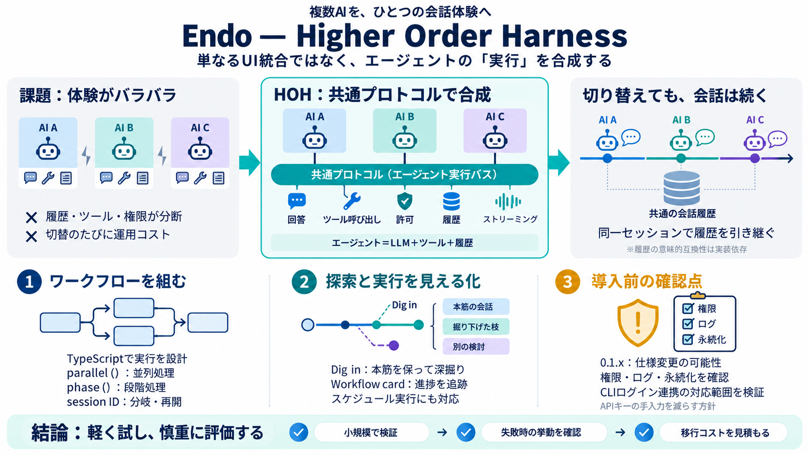

Best AI agent harnesses in 2026 | Blog — Northflank
Start with the workflow you already have. For interactive repository work, evaluate Claude Code, Codex, OpenCode, Pi, or…

Start with the workflow you already have. For interactive repository work, evaluate Claude Code, Codex, OpenCode, Pi, or…
Announced in beta August 5-6, 2026, Muse Code is Meta Superintelligence Labs' first coding agent — a terminal harness po…
T3MP3ST — Multi-agent offensive-security meta-harness (July 2026) that turns the coding agent you already run — Claude C…
SkillsLLM # codex-bridge bySateezg Verified Image generation (gpt-image-2) and GPT-5 subagents for Claude Code — thr…
Meta released Muse Code in beta on August 5, 2026. It is the company’s first dedicated coding agent, built to automate c…